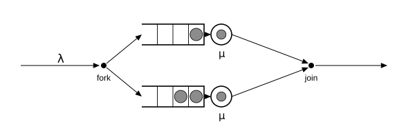
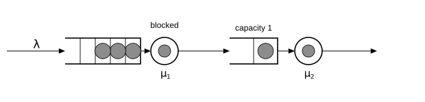
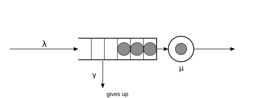

Richer stations
The stations so far take one job in, put one job out, and never refuse work. Three mechanisms break that mold, and each one steps outside what product-form theory can bless: fork–join (one job becomes several that must reunite), blocking (a full buffer backs up into the station upstream), and reneging (waiting jobs give up and leave). Each gets a diagram, a short simulation, and the strongest check available — an exact formula where one exists, an exact accounting identity where none does.
Fork–join
A fork splits an arriving job into one sibling per branch; a join waits until all siblings have finished and releases a single merged job. This is every "scatter–gather" in computing: a file striped across two disks, a query fanned out to replicas, a build with parallel steps. The join is the expensive part — the merged job is only as fast as its slowest sibling.

In Concourse, fork! and join! are stations with no clocks of their own — splitting and merging are instantaneous; only the branch stations take time:
using Concourse, Statistics
net = QueueNetwork(param_names = (:lambda, :mu))
source!(net, :arrive; interarrival = Law(:Exponential, scale = inv(Param(:lambda))))
fork!(net, :split; branches = (:disk_a, :disk_b))
station!(net, :disk_a; service = Law(:Exponential, scale = inv(Param(:mu))))
station!(net, :disk_b; service = Law(:Exponential, scale = inv(Param(:mu))))
join!(net, :merge; parts = 2)
sink!(net, :done)
route!(net, :arrive, Always(:split))
route!(net, :disk_a, Always(:merge))
route!(net, :disk_b, Always(:merge))
route!(net, :merge, Always(:done))
fj = compile(net)Fork–join queues are notoriously hard: for more than two branches no exact mean is known. But for exactly two exponential branches, Flatto and Hahn derived one:
\[E[T] = \frac{12 - \rho}{8} \cdot \frac{1}{\mu - \lambda}, \qquad \rho = \lambda/\mu,\]
and by Little's law the mean number of fork groups in the system is $\lambda E[T]$. A group is still "in the system" while any sibling is, so the measurement counts distinct groups in the state:
function replicate(f, m, θ, horizon, nreps; seed0 = 1000)
vals = [f(simulate(m, θ, horizon; seed = seed0 + r)) for r in 1:nreps]
mean(vals), std(vals) / sqrt(nreps)
end
groups_in_system(st) = Float64(length(Set(values(st.group))))
θ = [1.0, 2.0]
ρ = θ[1] / θ[2]
exact = θ[1] * (12 - ρ) / 8 / (θ[2] - θ[1])
est, se = replicate(r -> time_average(groups_in_system, fj, r), fj, θ, 4000.0, 16)
println("measured groups in system: ", round(est, digits = 3), " ± ",
round(se, digits = 3), " Flatto–Hahn: ", round(exact, digits = 4))measured groups in system: 1.414 ± 0.014 Flatto–Hahn: 1.4375For comparison, a single M/M/1 at this load holds $\rho/(1-\rho) = 1$ job on average — synchronization pushes the two-branch system well above that, exactly as far as the formula says.
Blocking
Buffers are finite in real systems. When a station's waiting room is full, Concourse offers two overflow behaviors: :drop (the arriving job is lost — a call center with a busy signal) and :block, where a finished job at the upstream station cannot move forward, and holds its server hostage until a slot frees downstream. Blocking is how congestion travels backwards through a production line.

A tandem line where the second station's buffer holds one waiting job (capacity = 1, overflow = :block), fed harder than the slow second server can drain ($\lambda = 2$, $\mu_1 = 3$, $\mu_2 = 0.7$) so blocking is constant. When several upstream servers wait for the same freed slot, who goes first is model semantics, declared per station by an unblock policy — FCFSUnblock (longest-blocked first) is the default and currently the only policy:
net = QueueNetwork(param_names = (:lambda, :mu1, :mu2))
source!(net, :arrive; interarrival = Law(:Exponential, scale = inv(Param(:lambda))))
station!(net, :first; service = Law(:Exponential, scale = inv(Param(:mu1))))
station!(net, :second; service = Law(:Exponential, scale = inv(Param(:mu2))),
capacity = 1, overflow = :block, unblock = FCFSUnblock())
sink!(net, :done)
route!(net, :arrive, Always(:first))
route!(net, :first, Always(:second))
route!(net, :second, Always(:done))
bt = compile(net)
θ = [2.0, 3.0, 0.7]
rec, states = simulate(bt, θ, 500.0; seed = 3, keep_states = true)
first_st = bt.names[:first]
blocked(st) = isempty(st.hold[first_st]) ? 0.0 : 1.0
println("fraction of time station 1 is blocked: ",
round(time_average(blocked, bt, rec), digits = 3))fraction of time station 1 is blocked: 0.75No closed form is claimed here — finite-buffer tandems have no simple one — but an exact accounting identity must still hold, blocking or not: every arrival is either still inside or has departed. (Note the line at station 1 grows without bound at these rates; this system is deliberately unstable, which is what sustained blocking looks like.)
arrivals = count(k -> k[1] == :arrival, rec.key)
second_st = bt.names[:second]
completions = count(k -> k[1] == :service && k[2] == second_st, rec.key)
println(arrivals, " arrivals − ", completions, " completions = ",
arrivals - completions, "; in system at the end: ",
number_in_system(states[end]))1007 arrivals − 354 completions = 653; in system at the end: 653One structural fact worth knowing: a cycle of stations that can block each other is a deadlock waiting to happen, so compile rejects such networks outright rather than letting a simulation hang.
Reneging
Customers hang up; packets time out; shoppers abandon carts. Reneging gives each waiting job a patience clock: if service has not started when the clock fires, the job leaves the line and goes to a declared destination. A job whose service has begun never reneges.

The model M/M/1+M adds exponential patience (rate $\gamma$, gamma) to M/M/1, declared with a patience law and a renege_to destination. Take $\lambda = \mu = 1$: without abandonment this queue sits exactly on the edge of instability, but impatience drains long lines, so it is stable:
net = QueueNetwork(param_names = (:lambda, :mu, :gamma))
source!(net, :arrive; interarrival = Law(:Exponential, scale = inv(Param(:lambda))))
station!(net, :counter; service = Law(:Exponential, scale = inv(Param(:mu))),
patience = Law(:Exponential, scale = inv(Param(:gamma))),
renege_to = :lost)
sink!(net, :done)
sink!(net, :lost)
route!(net, :arrive, Always(:counter))
route!(net, :counter, Always(:done))
ra = compile(net)The exact stationary distribution (the Erlang-A model) comes from a birth–death chain: arrivals at rate $\lambda$; departures from state $n$ at rate $\mu + (n-1)\gamma$, the server plus $n-1$ impatient waiters. Ten lines to compute, two predictions to check — the mean number in system $L$, and the abandonment rate, which must equal $\gamma$ times the mean number waiting $L_q$:
function erlang_a(λ, μ, γ; N = 400)
w = ones(N + 1)
for n in 1:N
w[n + 1] = w[n] * λ / (μ + (n - 1) * γ)
end
π = w ./ sum(w)
L = sum(n * π[n + 1] for n in 0:N)
Lq = sum(max(n - 1, 0) * π[n + 1] for n in 0:N)
L, Lq
end
θ = [1.0, 1.0, 0.5]
L_exact, Lq_exact = erlang_a(θ...)
recs = [simulate(ra, θ, 2000.0; seed = 1000 + r) for r in 1:16]
Ls = [time_average(number_in_system, ra, r) for r in recs]
rates = [count(k -> k[1] == :patience, r.key) / r.horizon for r in recs]
println("mean in system: ", round(mean(Ls), digits = 3), " ± ",
round(std(Ls) / sqrt(16), digits = 3), " Erlang-A: ",
round(L_exact, digits = 3))
println("abandonment rate: ", round(mean(rates), digits = 3), " ± ",
round(std(rates) / sqrt(16), digits = 3), " gamma*Lq: ",
round(θ[3] * Lq_exact, digits = 3))mean in system: 1.297 ± 0.009 Erlang-A: 1.313
abandonment rate: 0.309 ± 0.003 gamma*Lq: 0.313Abandonments appear in the record as a third kind of event key, (:patience, station, job), next to :arrival and :service — the same record machinery from page one, one clock family richer.
Every check in this tutorial has quietly leaned on replications, seeds, and time averages. The last page makes that machinery explicit — and shows the traps.